6
Decreasing Numbers
6
Decreasing Numbers

Mathematics
Standard - IV
Abacus Kichu and friends made abacus and are playing with it.
That’s the largest three-digit number.
This is my abacus.
What is the number on the abacus? What number subtracted from it gives the smallest three-digit
number?
Draw this number on the abacus.
Fill up the blanks 99 – 10 = ............. 999 – 100 = .............
Hundreds Tens 78
Ones
9999 – 1000 = .............


Decreasing Numbers
Let’s Subtract
Subtracting the largest two-digit number from the largest three-digit number gives what number? Subtracting 120 from 340 gives what number?
See Kichu’s answer. We need only subtract 12 tens from 34 tens. 34 tens − 12 tens = Tens =
We can also do this by finding how many tens added to 16 tens give 34 tens
What if we want to subtract 160 from 340? Try it! What about subtracting 162 from 346 ?
Method : 1 Calculate how much you add to 162 to get 346. 162
+ 8
=
170
146 + 30 + 8
=
140 + 6 + 30 + 8
170
+ 30
=
200
=
140 + 30 + 14
200
+ 146
=
346
=
170 + 14
=
184
Method : 2 346
→ 300 + 40 + 6 –
162
→ 100 + 60 + 2
Rewriting this 346
→ 200 + 140 + 6 –
162
→ 100 + 60 + 2
100 + 80 + 4
346 - 162 = 184
Hundreds
Tens
Ones
3
4
6
1
6
2
–
This can be rewritten like this. Hundreds
Tens
Ones
2
14
6
1
6
2
–
You can also write it like this.
346 – 162 184
79

Mathematics
Standard - IV
Kichu made 876 on his abacus and Chippy made 697 on hers.
How much more than Chippy’s number is Kichu’s number?
You have 13 beads. Write the largest three-digit number and
the smallest three-digit number you can show on the abacus using these. What is their difference? Largest three-digit number Smallest three-digit number Difference
Which is the correct answer ? Between which two numbers below is 761 − 380?
(i) Between 400 and 500 (ii) Between 400 and 420 (iii) Between 380 and 400 (iv) Between 350 and 380 My answer
Try this! 8–1 = 7 88 – 11 = ............ 888 – 111 = ............ 8888 – 1111 = ............
80


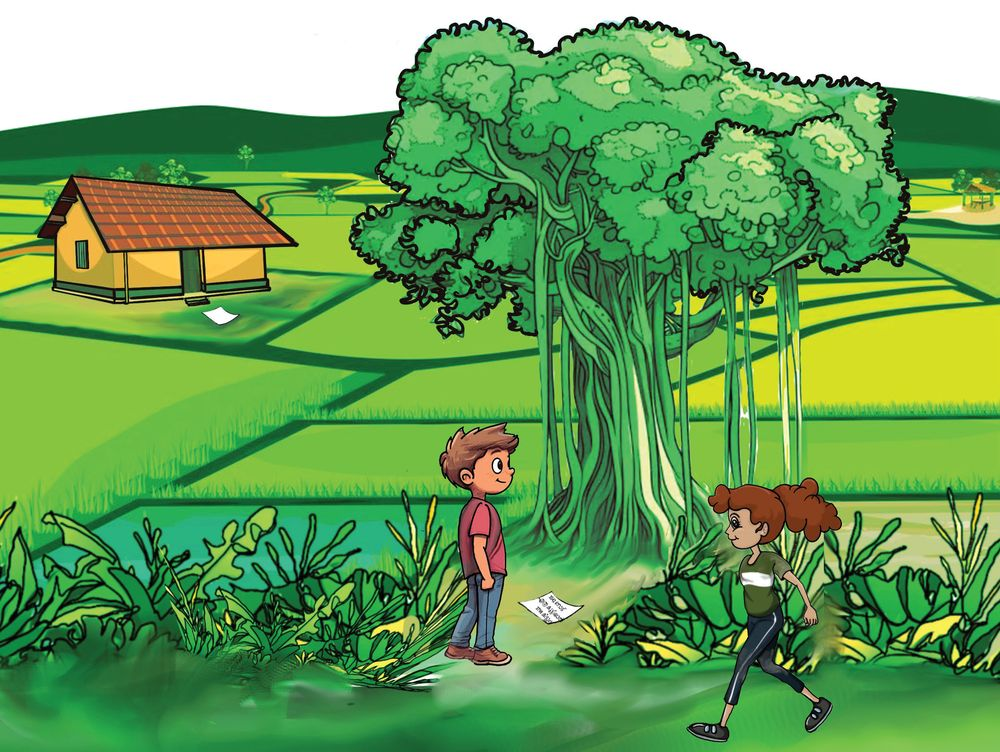
Decreasing Numbers
Find Out... And Win A Prize Today, Kichu’s sister Ammu also played with Kichu and his friends.
I’ll give a prize to all! How do we get a prize?
The way to get a prize is under
the banyan tree.
There’s a piece of paper under the tree.
What should be added to 3542 to get 3798?
81


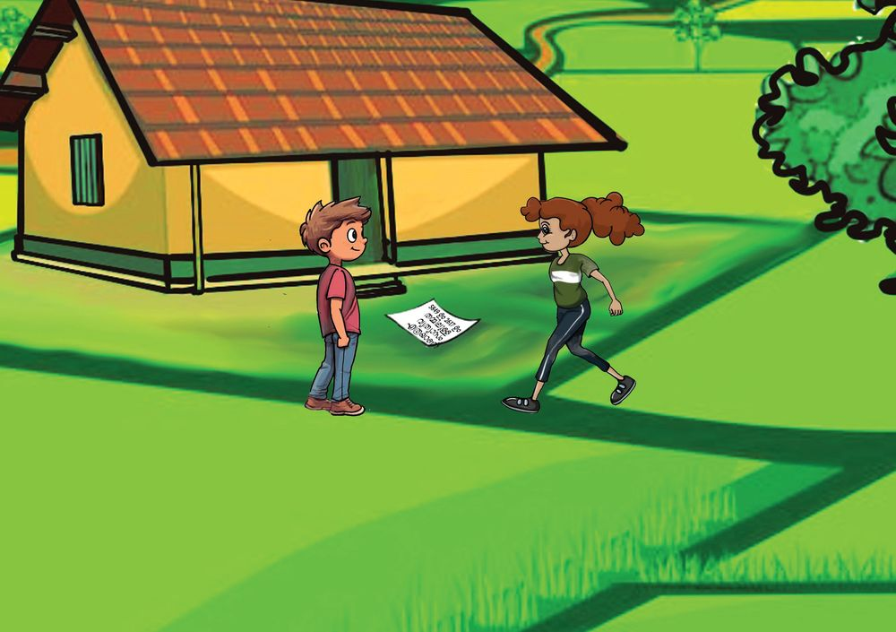
Mathematics
Standard - IV
We can also write like this: 3542 + 8
=
3550
Thousands
Hundreds
Tens
Ones
3550 + 50
=
3600
3600 + 100
=
3700
3
7
9
8
3700 + 98
=
3798
3
5
4
2
2
5
6
8 + 50 + 100 + 98
= 100 + 98 + 58
= 100 + 98 + 2 + 56
= 100 + 100 + 56
= 256
Any other way to calculate this?
The next clue to get the prize is in the front yard.
What is the difference of 5849 and 2617?
82
Thousands
Hundreds
Tens
Ones
5
8
4
9
2
6
1
7

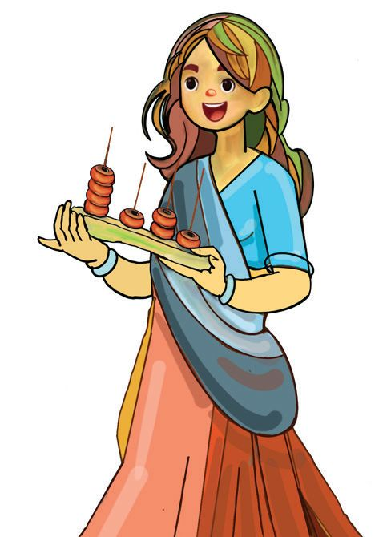


Decreasing Numbers
Prize for writing a question with the number you got as the answer.
What I Wrote • What number is got by combining ...... thousands, ...... hundreds, ...... tens and ....... ones? • What number is got by adding ....... and ....... ?
Write More Questions... • • •
The Prize What is the difference of 2837 and 524? An abacus as prize for each.
Thousands
Hundreds Tens
How about showing the answer on the abacus?
Ones
83

Mathematics
Standard - IV
Math Box Kichu came below the banyan tree with the square sheets in the math box to play with his friends. See the picture...
How many thousands in it? How many hundreds? How many tens? How many ones? What’s the number? Mini coloured 1251 of these squares. 84
Puzzle Corner
I’m between five thousand and eight thousand. I'm an even number. Digits are four consecutive numbers. Who am I?


Decreasing Numbers
Let’s Colour! You too, colour the 1251 squares.
A set of 100 squares is split into 10 of 10 squares.
Among the squares not coloured Number of thousands Number of hundreds
Thousands Hundreds Tens Ones
2
3
4
3
1
2
5
1
Number of tens Number of ones The number?
Subtract Subtract 1812 from 3625 using square sheets.
We can rewrite like this. Thousands Hundreds Tens Ones
2
2
14
3
1
2
5
1
...........
........
......
.......
Write how you subtracted in your notebook... 85

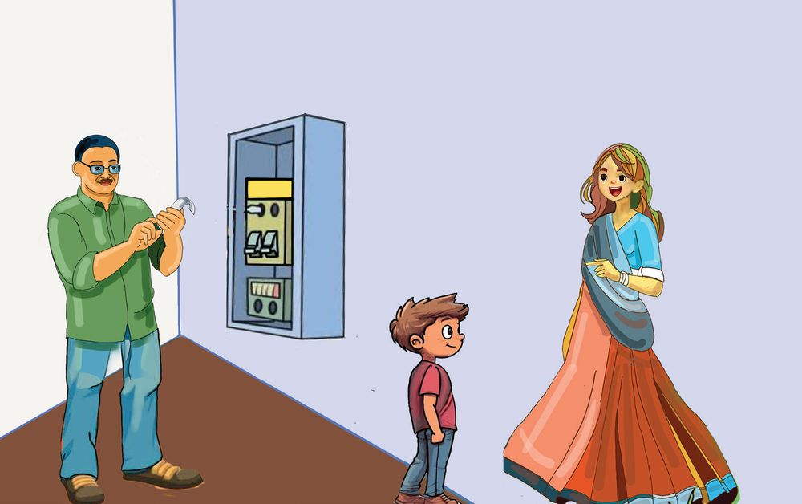
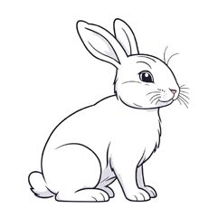
Mathematics
Standard - IV
Electricity Bill Reading is higher this time.
Everything should be switched off after use.
At Kichu’s home, The electricity meter reading this time is 4526. Last reading was 3845. See how the use of electricity at Kichu’s home is calculated.
Method - 1
526
4526 – 3845 100 50 5 3845
3850
3900
5 + 50 + 100 + 526 = 681
86
4000
4526


Decreasing Numbers
Method - 2 4000 + 500 + 3000 + 800 +
20 + 6 40 + 5
4000 + 400 + 120 + 6 3000 + 800 + 40 + 5
Number Thousands Hundreds Tens
4526
3
14
12
6
3845
3
8
4
5
6
8
1
3000 + 1400 + 120 + 6 3000 + 800 + 40 + 5 600 +
–
80 + 1 Can also write like this
4526 – 3845
3
4526 – 3000 = 1526 1526 – 800 =
726
726
681
–
Ones
45 =
14
12
4 5 2 6 – 3 8 4 5 6 8 1
Meter reading The electricity meter reading at the homes of some of Kichu’s friends are given below. Fill up the blanks. Name
Meter Reading February April
Usage for 2 months
Chippi
4215
4826
....................
Jeena
....................
5278
400
Farris
6970
7340
....................
Minny
5870
....................
395
In which household was the most amount of electricity used?
What is the electricity meter reading at your house this month? 87

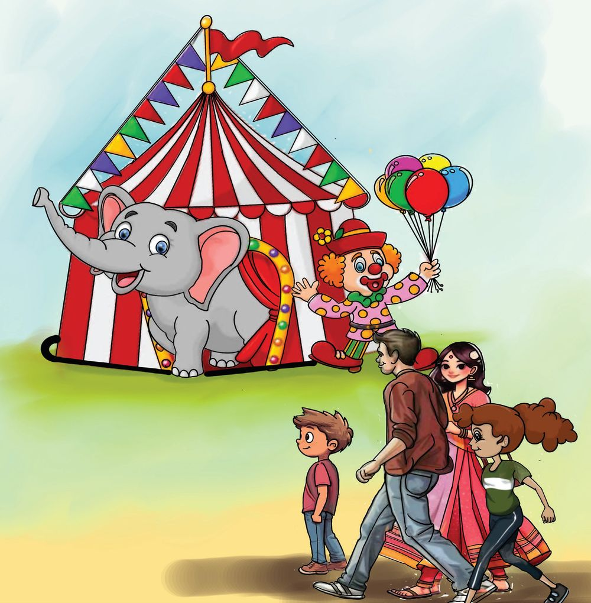


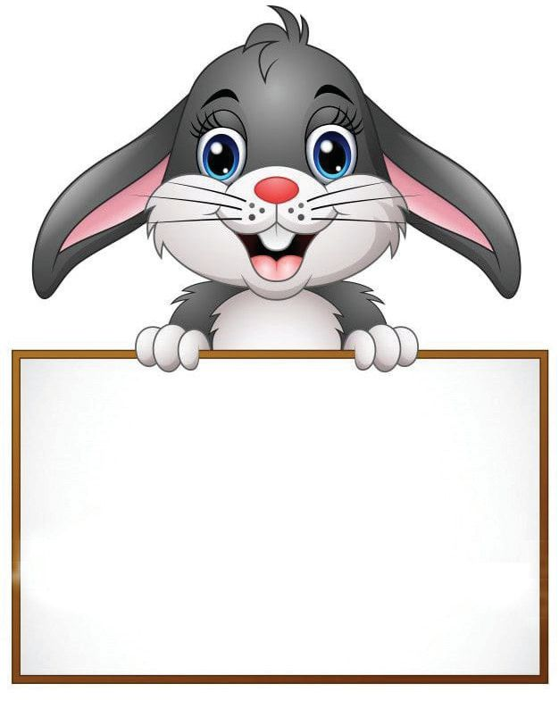
Mathematics
Standard - IV
Circus Can we go to the circus today Dad?
OK! We’ll go in the evening.
Ticket
90 rupees for children 180 rupees for adults.
88


Decreasing Numbers
Kichu and family reached the circus tent and bought tickets. How much for the 4 persons? Gave two five-hundred rupee notes at the counter. How much did they get back?
Method - 1 1000 –
540
540
+
60
600
+
400 = 1000
60
+
400 = 460
= 600
Method - 3
1000 –
500 = 500 40
= 999 – 539 = 460
1
540
–
1000 – 540 = (1000 – 1) – (540 –1)
Thousands Hundreds Tens
1000 – 500
Method - 2
= 460
We can also write like this
1000 – 540 460
0
0
0
5
4
0
Thousands Hundreds Tens
..........
Ones
Ones
9
10
0
5
4
0
......
....... .......
1000 – 100 = 900 1000 – 500 = ............ 1000 – 250 = ............ 1000 – 820 = ............ 1000 – 990 = ............
89

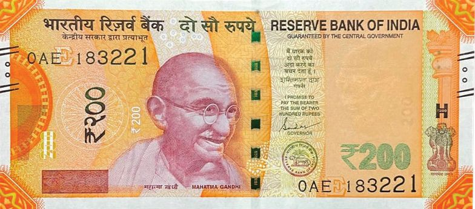


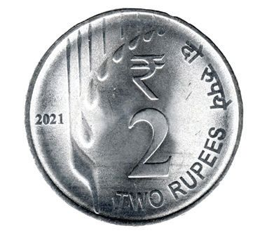
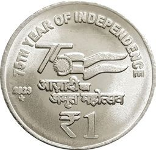
Mathematics
Standard - IV
Notes and Coins... Write the amount got back at the circus as notes and coins.
How many notes ? How many coins? If it were just 100-rupee notes and 10-rupee notes, how many notes would they have got?
If the number of notes is to be 10, which notes must be used and how many of each?
90

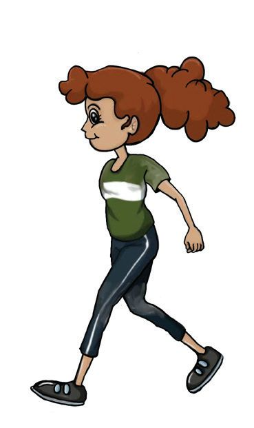

Decreasing Numbers
Savings How about a game with play money today?
I’m ready
Kichu and Minnie playing bank with play money. See the numbers in the passbook.
Name : Kichu Deposit
Withdrawn
Date
Amount
Date
Amount
14.10.2025
5484
14.10.2025
3295
Method - 1 5484 – 3295
Kichu withdrew 3295 rupees from his deposit. How much money is left?
One way is subtract 300 from 484 and add 5.
Subtracting 300 from 489 also gives the right answer.
5000 – 3000 = 2000 484 – 300
= 184
484 – 295
= 184 + 5 = 189
2000 + 189 = 2189
91

Mathematics
Standard - IV
Method - 2 5484 – 3295 How I calculated
Another way
Look at Minnie’s passbook and calculate what is left in the account?
Name: Minnie Withdrawn
Deposit Date
Amount
Date
Amount
14.10.2025
4971
14.10.2025
2784
If rupees 2784 was withdrawn from Minnie's savings, Balance amount How I calculated
Another way
Puzzle Corner What is the number? 6349 added to a four-digit number gives 8778. What is the number?
92


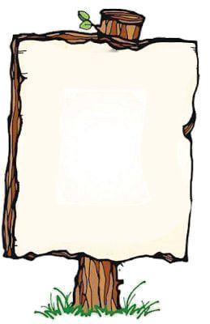
Decreasing Numbers
Playing Shop The next day, the friends made a shop below the banyan tree. Minnie and kichu came there with the money they had withdrawn.
Shoes - Rs. 800 Bat - Rs. 1400 Bicycle - Rs. 8999 Football - Rs. 950 Bag - Rs. 950 Umbrella - Rs. 420 Shoes - Rs. 420 Mobile phone - Rs. 2500
What they bought
Kichu
Minnie
Shoes Football Bag
Bat Umbrella
How much money does Kichu have after buying these? What about Minnie? How much Kichu has now
How much Minnie has now
93


Mathematics
Standard - IV
Jina wants to buy a bicycle. She has 4275 rupees with her. How much more does she need? Price of bicycle How I calculated
1. Write the next three numbers:
6772, 6572, 6372,
,
,
2365, 2254, 2143,
,
,
5368, 5438, 5508,
,
,
2. Groceries for one month were bought for Kichu’s household
and it cost 5372 rupees. 3685 rupees was paid in cash and the rest transferred via an UPI app. How much is it?
3. Subtract the number got by combining 43 hundreds and 57
tens from the number got by combining 8 thousands, 27 tens and 5 ones.
4. You have 18 beads. Write the largest and smallest numbers you can show on an abacus with these. What is the difference of these numbers?
94

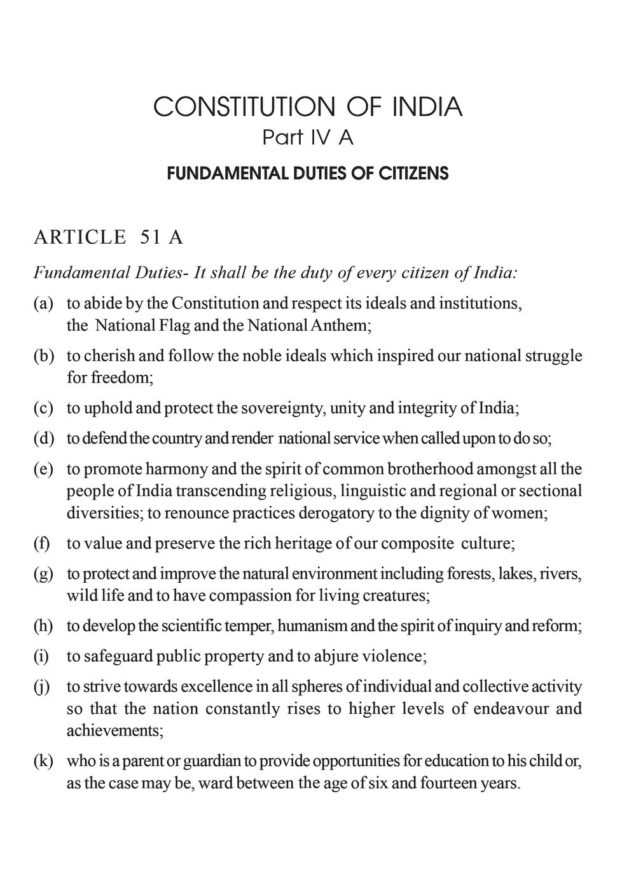